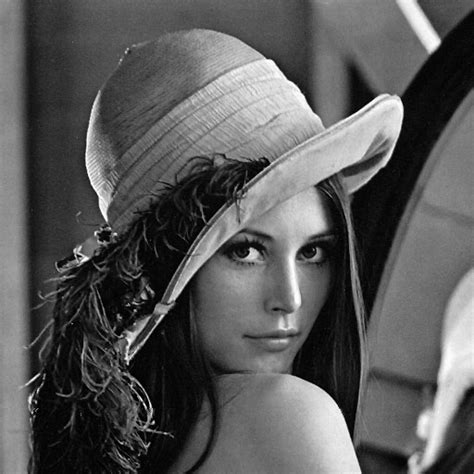

Optical Flow Operations#
The package includes functions to compute the optical flow between two images based on OpenCV DIS (Dense Inverse Search) algorithm. The optical flow can be computed for a specific channel of the images and for a specific region of interest.
The computed optical flow can be visualized using quiver plots or color-coded flow maps.
Compute Optical Flow#
- compute_optical_flow(image1, image2, channel=0, estimate_flow_x=None, estimate_flow_y=None, region=None, disflow_params=None)[source]#
Compute the optical flow between two images using the DIS method of
OpenCV.The optical flow is computed between two images using the Dense Inverse Search (DIS) algorithm implemented in OpenCV. The function allows selecting a specific channel from multi-channel images and provides options to customize the DIS algorithm through a parameters dictionary.
Lets consider two images \(I_1\) and \(I_2\) of shape \((H, W)\). The optical flow is represented as two 2D arrays \(F_x\) and \(F_y\), each of shape \((H, W)\), where \(F_x[i, j]\) and \(F_y[i, j]\) denote the horizontal and vertical displacements (in pixels) of the pixel located at \((i, j)\) in the first image to its corresponding position in the second image.
\[I_2(i + F_y[i, j], j + F_x[i, j]) \approx I_1(i, j)\]With image array indices \(i\) and \(j\) representing the row (vertical) and column (horizontal) indices, respectively.
Note
The method convert the images data to uint8 before processing, as required by OpenCV’s DIS optical flow implementation.
The method convert the estimated flow to float32, as required by OpenCV’s DIS optical flow implementation.
The
disflow_paramsdictionary can contain the following keys:"FinestScale":int(default:0) - The finest scale to use in the image pyramid."VariationalRefinementAlpha":float(default:1) - Weight for the smoothness term in the variational refinement."VariationalRefinementDelta":float(default:1) - Weight for the data term in the variational refinement."VariationalRefinementGamma":float(default:1) - Weight for the gradient constancy term in the variational refinement."VariationalRefinementEpsilon":float(default:0.02) – Small constant to avoid division by zero in the variational refinement."VariationalRefinementIterations":int(default:10) - Number of iterations for the variational refinement."UseMeanNormalization":bool(default:True) - Whether to use mean normalization."GradientDescentIterations":int(default:500) - Number of gradient descent iterations."UseSpatialPropagation":bool(default:True) - Whether to use spatial propagation."PatchSize":int(default:50) - Size of the patches."PatchStride":int(default:10) - Stride between patches.
Warning
xandycomponents of the optical flow are defined in image coordinates and not in array indices. This means that the x-component corresponds to the horizontal displacement (columns) and the y-component corresponds to the vertical displacement (rows).The optical flow is compute with
numpy.uint8images, so the input images will be scaled to fit into the range ofnumpy.uint8if they are of a different unsigned integer type. The output flow will be in pixels and can be positive or negative depending on the direction of motion.- Parameters:
image1 (ArrayLike) – The first image with shape \((H, W)\) or \((H, W, C)\) where \(C\) is the number of channels. The image must be unsigned integer type.
image2 (ArrayLike) – The second image with shape \((H, W)\) or \((H, W, C)\) where \(C\) is the number of channels. The image must be unsigned integer type.
channel (Integral, optional) – The channel of the images to use for optical flow computation. Default is 0.
estimate_flow_x (Optional[ArrayLike], optional) – An initial estimate for the x-component of the optical flow with shape \((H, W)\). Default is None.
estimate_flow_y (Optional[ArrayLike], optional) – An initial estimate for the y-component of the optical flow with shape \((H, W)\). Default is None.
region (Optional[Tuple[Integral, Integral, Integral, Integral]], optional) – A tuple specifying the region of interest in the format (x, y, width, height). If None, the entire image is computed. Default is None.
disflow_params (Optional[Dict[str, Any]], optional) – Parameters for the DIS optical flow algorithm. See above for details. Default is None.
- Returns:
flow_x (
numpy.ndarray) – The x-component of the optical flow (horizontal displacement) in pixels with shape \((H, W)\). The pixels outside the specified region (if any) will be set tonumpy.nan.flow_y (
numpy.ndarray) – The y-component of the optical flow (vertical displacement) in pixels with shape \((H, W)\). The pixels outside the specified region (if any) will be set tonumpy.nan.
- Return type:
Tuple[ndarray, ndarray]
See also
pycvcam.display_optical_flowDisplay the optical flow overlaid on the given image using Matplotlib.
Examples
Create two example images and compute the optical flow between them.

Lena image used for the example.#
1import numpy 2from pycvcam import compute_optical_flow 3from pycvcam import get_lena_image 4 5# Create two example images 6image1 = get_lena_image() # numpy array of shape (474, 474) 7 8# Shift the image to create a second image 9image2 = numpy.roll(image1, shift=5, axis=1) # Shift right by 5 pixels 10image2 = numpy.roll(image2, shift=3, axis=0) # Shift down by 3 pixels 11 12# Compute optical flow 13flow_x, flow_y = compute_optical_flow(image1, image2) 14 15# Check if all flow values in the center of the image are approximately (5, 3) 16valid_x = numpy.isclose(flow_x[100:300, 100:300], 5, atol=0.5) 17valid_y = numpy.isclose(flow_y[100:300, 100:300], 3, atol=0.5) 18valid = valid_x & valid_y 19assert valid.all(), "Flow values in the center of the image should be approximately (5, 3)"
{kind=link}
Display Optical Flow#
- display_optical_flow(image, flow_x, flow_y, region=None, display_region=None, alpha=0.5, channel=0, norm_cmap='inferno', comp_cmap='bwr', norm_vmin=None, norm_vmax=None, comp_vmin=None, comp_vmax=None)[source]#
Display the optical flow overlaid on the given image using Matplotlib.
- Parameters:
image (ArrayLike) – The background image with shape \((H, W)\) or \((H, W, C)\).
flow_x (ArrayLike) – The x-component of the optical flow (horizontal displacement) in pixels with shape \((H, W)\).
flow_y (ArrayLike) – The y-component of the optical flow (vertical displacement) in pixels with shape \((H, W)\).
region (Optional[Tuple[Integral, Integral, Integral, Integral]], optional) – A tuple specifying the region of interest in the format (x, y, width, height). If None, the entire image is displayed. Default is None.
display_region (Optional[Tuple[Integral, Integral, Integral, Integral]], optional) – A tuple specifying the region of the flow to display in the format (x, y, width, height). If None, the entire flow is displayed. Default is None.
alpha (Real, optional) – The alpha blending value for overlaying the optical flow on the image. Default is 0.5.
channel (Integral, optional) – The channel of the image to display if it is multi-channel. Default is 0.
norm_cmap (
str, optional) – The colormap for the flow magnitude. Default is ‘inferno’.comp_cmap (
str, optional) – The colormap for the flow components. Default is ‘bwr’.norm_vmin (Optional[Real], optional) – Minimum value for flow magnitude colormap normalization. Default is None.
norm_vmax (Optional[Real], optional) – Maximum value for flow magnitude colormap normalization. Default is None.
comp_vmin (Optional[Real], optional) – Minimum value for flow component colormap normalization. Default is None.
comp_vmax (Optional[Real], optional) – Maximum value for flow component colormap normalization. Default is None.
- Returns:
Displays the optical flow overlay on the image.
- Return type:
None
See also
pycvcam.compute_optical_flowCompute the optical flow between two images using the DIS method of OpenCV.
Examples
Create two example images and compute the optical flow between them.
Lena image used for the example.#
1import numpy 2import cv2 3from pycvcam import compute_optical_flow, display_optical_flow 4from pycvcam import get_lena_image 5 6# Create two example images 7image1 = get_lena_image() # numpy array of shape (474, 474) 8 9# cv2 distortion to create a second image 10image2 = cv2.undistort(image1, cameraMatrix=numpy.array( 11 [[300, 0, 237], [0, 300, 237], [0, 0, 1]] 12), distCoeffs=numpy.array([-0.2, 0.1, 0, 0])) 13 14# Compute optical flow 15flow_x, flow_y = compute_optical_flow(image1, image2) 16 17# Select a region of interest (optional) 18display_region = (10, 10, image1.shape[1]-20, image1.shape[0]-20) # (x, y, width, height) 19 20# Display the optical flow 21display_optical_flow(image1, flow_x, flow_y, display_region=display_region)
Examples#
See a complete example in the gallery: Computing optical flow between two images.